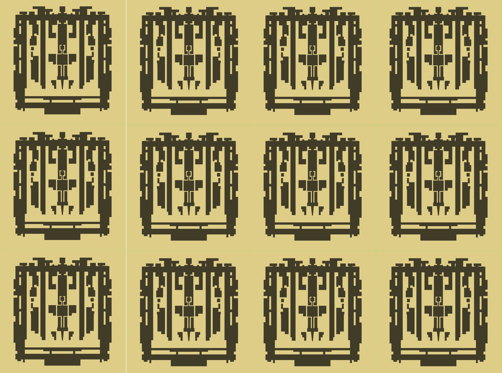

The Fluxly Boombox was part of the Mockerspace/Fakerspace exhibit, ostensibly created by an industrial-sized version of the Mokrbot. The Boombox is dedicated to playing Fluxly and has the added bonus of highlighting the panning features as the Fluxum move across the screen.